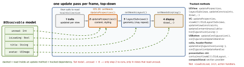

ios-platform · folio
In one line: UIKit subscribes for you: an @Observable property (or a trait) you
read inside an update method becomes a dependency; when it changes, UIKit invalidates
only that view and re-runs only that method in the next update pass — no
setNeeds…. On by default in iOS 26; iOS 18 opts in with UIObservationTrackingEnabled.
Download PDF Print view LaTeX source


How it works
- Observation tracking: each update method runs inside Observation’s access tracking; every property get registers the view, a later set schedules that view’s matching invalidation. iOS 26: always on. iOS 18: Info.plist
UIObservationTrackingEnabled = YEStracks the existing methods only. updateProperties()(iOS 26,UIView+UIViewController): content, styling, behaviour. Runs after traits, just beforelayoutSubviews, but is invalidated independently — a text change no longer forces a layout. It may invalidate layout; layout runs right after..flushUpdates(iOS 26):UIView.animate(options: .flushUpdates) {…}applies pending updates before and after the block — change a constraint or a model property inside; nolayoutIfNeeded().- Traits — iOS 17:
registerForTraitChanges([UITrait…], handler:)replaces the deprecatedtraitCollectionDidChange; removed automatically at dealloc. Custom trait =UITraitDefinition(defaultValue) + accessors onUITraitCollectionandUIMutableTraits; set it withtraitOverrides, it flows down;UITraitBridgedEnvironmentKeymirrors it into SwiftUI. iOS 18: automatic trait tracking in the same update methods. UIButton.Configuration(iOS 15):.plain/.gray/.tinted/.filled()…+subtitle,imagePlacement,showsActivityIndicator,cornerStyle; per-state tweaks inconfigurationUpdateHandler. iOS 26:.glass(),.prominentGlass(),.clearGlass(),.prominentClearGlass().UIContentUnavailableConfiguration(iOS 17):.empty()/.loading()/.search()+image,text,secondaryText, button; assignvc.contentUnavailableConfiguration(nilhides) insideupdateContentUnavailableConfiguration(using:); before 26 trigger it withsetNeedsUpdateContentUnavailableConfiguration().
Example — one model drives badge, spinner, empty state
@Observable final class Inbox { var unread = 0; var loading = true }
final class InboxVC: UIViewController {
let inbox = Inbox(); let refresh = UIButton(configuration: .filled())
override func updateProperties() { // iOS 26, tracked
super.updateProperties()
tabBarItem.badgeValue = inbox.unread > 0 ? "\(inbox.unread)" : nil
refresh.configuration?.showsActivityIndicator = inbox.loading }
override func updateContentUnavailableConfiguration(
using state: UIContentUnavailableConfigurationState) {
contentUnavailableConfiguration = inbox.loading ? .loading() : nil }
func markAllRead() { // animated re-run
UIView.animate(options: .flushUpdates) { self.inbox.unread = 0 } }
func observeWidth() { // iOS 17: once, viewDidLoad
registerForTraitChanges([UITraitHorizontalSizeClass.self]) {
(self: Self, previous: UITraitCollection) in self.relayout() } } }What landed when — say the version
| 15 | UIButton.Configuration · cell configurationUpdateHandler · keyboardLayoutGuide ·
pop-up buttons |
| 16 | UIHostingConfiguration · UIEditMenuInteraction · multi-item context menus |
| 17 | viewIsAppearing (back to 13) · trait system · UIContentUnavailableConfiguration ·
#Preview · addSymbolEffect(.bounce) · .uniformAcrossSiblings · palette menus |
| 18 | auto trait tracking · observation opt-in · UIUpdateLink ·
UITab/UITabGroup · UIBackgroundConfiguration.listCell() ·
UIView.animate(.spring) (SwiftUI Animation) |
| 26 | observation default · updateProperties · .flushUpdates · typed
NotificationCenter.Message · UIMainMenuSystem · glass buttons ·
UIHostingSceneDelegate · split-view inspector |
Next: the release after iOS 26 refuses to launch a UIKit app built with the latest SDK that has not adopted the UIScene life cycle (WWDC25).
Traps
- Model read in
viewDidLoador an action is not tracked — the label never updates. Read it in an update method. - Only an
@Observableclass read through the handler is tracked; a handler that captured a struct copy of the item stays frozen. - iOS 18 target: the plist key covers layout/draw/config handlers, but
updatePropertiesand.flushUpdatesneedif #available(iOS 26, *). - Constraint change in
UIView.animatewith neitherlayoutIfNeeded()nor.flushUpdates→ it jumps. registerForTraitChangesinsidelayoutSubviewsre-registers every pass — once.var c = button.configuration; c?.title = "Go"edits a copy — assign it back.- Mixing
setTitle(_:for:)/ edge insets with a configuration: the configuration wins — style a button one way only.
Remember
“Read it in an update method and you are subscribed.” Order: traits →
properties → layout → draw, each with its own setNeeds….